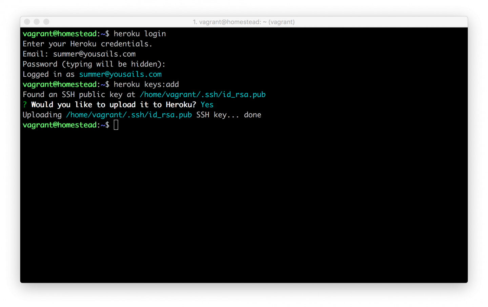
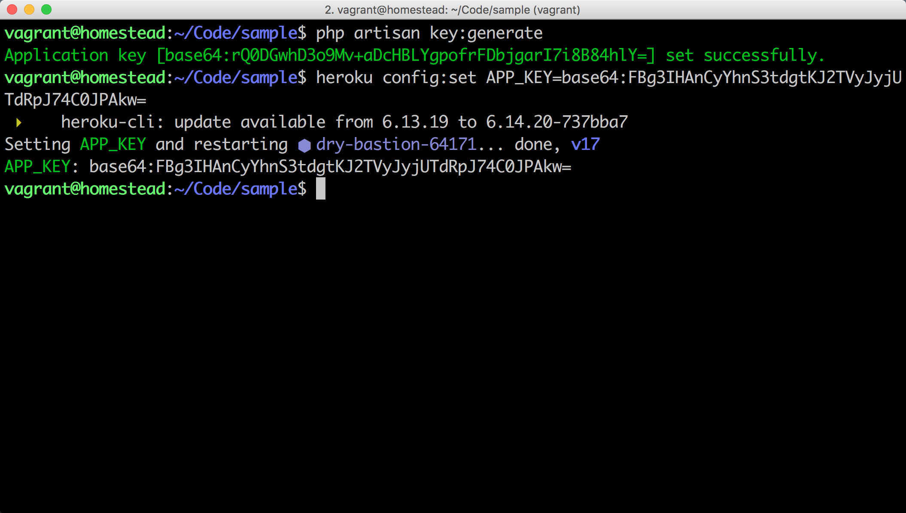
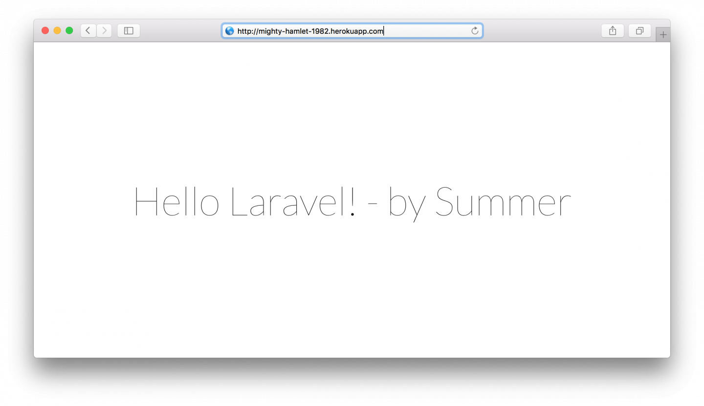

2.9. 部署上线
部署
我们可以通过购买 Linode、DigitalOcean、UCloud、阿里云服务器来部署应用，或者是使用一些如 Engine Yard Cloud 和 Heroku 这样的云部署服务来快速完成应用的部署上线。
由于 Heroku 的部署上线流程异常简单，对新手友好。因此在本书教程当中，我们将使用 Heroku 来部署 Laravel 应用。
什么是 Heroku？
Heroku 是一个支持多种编程语言的 PaaS (Platform-as-a-Service)。在 2010 年被 Salesforce 收购。Heroku 作为最开始的云平台之一，从 2007 年 6 月起开始开发，当时它仅支持 Ruby，后来增加了对 Java、Node.js、Scala、Clojure、Python 以及 PHP 和 Perl 的支持。由于其应用部署流程异常简单，因此倍受广大开发者欢迎。
Heroku 的基本安装配置
首先我们需要先 注册一个 Heroku 账号。
无法顺畅打开 Heroku 网站的同学，可以下载使用 Lantern（ Mac 或者 Wins ）。请注意，Lantern 客户端每月会赠送 500 MB 的免费流量，在我们课程中，我们只使用 Lantern 来登录一些国内访问速度不佳的网站，如这里的 Heroku 官网。我们与 Lantern 并没有合作，推荐 Lantern 是因为国情我们有『墙』，而 Lantern 刚好是比较傻瓜式翻墙的方法，我们并不建议你成为付费用户。另外当你使用完 Lantern 以后请注意退出应用，否则 Lantern 的免费流量将会很快用完。
本教程提供的 Homestead 安装包已默认为你安装好了 heroku 命令行工具集，因此我们不必再进行重复安装。如果你使用的不是本教程提供的 Homestead 安装包，则可通过 Heroku 官方提供的 安装教程 进行安装。
安装完成之后我们可以使用以下命令来登录你的 Heroku 账号：
$ heroku login添加 SSH Key 到 Heroku 上：
$ heroku keys:add
要将应用部署到 Heroku 上，我们还需要在 Laravel 项目下新建一个 Procfile 文件，通过配置该文件来告诉 Heroku 应当使用什么命令来启动 Web 服务器。接着还需要将该文件纳入到 Git 版本控制中：
$ cd ~/Code/Laravel
$ echo web: vendor/bin/heroku-php-apache2 public/ > Procfile
$ git add -A
$ git commit -m "Procfile for Heroku"如何在 Heroku 上创建一个新应用？
我们可以使用 heroku create 命令在 Heroku 上创建一个新应用：
$ heroku create
Creating mighty-hamlet-1982... done, stack is cedar-14
http://mighty-hamlet-1982.herokuapp.com/ | git@heroku.com:mighty-hamlet-1982.git
Git remote heroku addedmighty-hamlet-1982 是 Heroku 随机为应用生成的默认名称，每个人生成的名称都不相同。而 http://mighty-hamlet-1982.herokuapp.com/ 则是应用的线上地址。
如果你对生成的默认名称不满意，你可以使用 heroku rename 来对应用名称进行更改，但要保证更改的名称未被其它人占用。如：
$ heroku rename your-app-name声明 buildpack
Heroku 平台支持多种语言，在进行应用部署时，Heroku 会自动检查应用的代码是用什么语言写的，然后再接着执行一系列针对该语言的操作来准备好程序运行环境。Laravel 应用默认会包含 package.json 文件，但当 Heroku 检查到该文件时，它会认为此应用是用 Node.js 写的，因此我们需要对应用的 buildpack 进行声明，告诉 Heroku 说我们的应用是用 PHP 写的。声明命令如下：
$ heroku buildpacks:set heroku/php设置 APP key
Laravel 使用 App Key 来完成对用户会话及其它信息的编码加密操作，因此我们也需要将 App Key 一同加入到 Heroku 的配置中。
首先，使用 Laravel 自带的 artisan 命令来生成 App Key：
$ php artisan key:generate将生成的 App Key 替换掉下面命令的 <your_app_key> ，并运行该命令行来完成配置：
$ heroku config:set APP_KEY=<your_app_key>
部署上线
我们要做的最后一步就是将代码推送和部署到 Heroku 上：
$ git push heroku master
Counting objects: 4, done.
Delta compression using up to 4 threads.
Compressing objects: 100% (4/4), done.
Writing objects: 100% (4/4), 379 bytes | 0 bytes/s, done.
Total 4 (delta 3), reused 0 (delta 0)
remote: Compressing source files... done.
remote: Building source:
remote:
remote: -----> Fetching custom git buildpack... done
remote: -----> PHP app detected
remote: -----> Resolved 'composer.lock' requirement for PHP to version 5.6.14.
remote: -----> Installing system packages...
remote: - PHP 5.6.14
remote: - Apache 2.4.10
remote: - Nginx 1.6.0
remote: -----> Installing PHP extensions...
remote: - mbstring (composer.lock; bundled)
remote: - zend-opcache (automatic; bundled)
remote: -----> Installing dependencies...
remote: Composer version 1.0.0-alpha10 2015-04-14 21:18:51
remote: Loading composer repositories with package information
remote: Installing dependencies from lock file
...
remote: - Installing laravel/framework (v5.1.19)
remote: Downloading: 100%
remote:
remote: Generating optimized autoload files
remote: Generating optimized class loader
remote: Compiling common classes
remote: -----> Preparing runtime environment...
remote: -----> Discovering process types
remote: Procfile declares types -> web
remote:
remote: -----> Compressing... done, 74.5MB
remote: -----> Launching... done, v5
remote: https://mighty-hamlet-1982.herokuapp.com/ deployed to Heroku
remote:
remote: Verifying deploy... done.
To https://git.heroku.com/mighty-hamlet-1982.git
1eb2be6..1b70999 master -> master代码推送成功之后，可以使用此命令来快速打开线上应用：
$ heroku open如果无法在浏览器打开，可根据命令行输出提示中给出的链接直接访问：
▸ Error opening web browser.
▸ Error: Exited with code 3
▸
▸ Manually visit https://mighty-hamlet-1982.herokuapp.com/ in your
▸ browser.至此，我们便完成了一个 Laravel 应用的部署。
